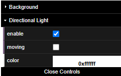

I've created a website that displays 3D models of coca-cola products using ThreeJS.
The model and animations were created in Blender.
Download Blend Files: Can Opening Can Crush
The 3D scene features two lights, the Hemisphere light and the Directional light. Using 'dat-gui' - a retained mode GUI library - I added the ability to enable/disable the directional light, an option to have the light rotate around the can, and the ability to change the color of the light using a color selector.

Using ThreeJS's orbital controls addon, the user can get a full 360° view of the can model.
A drop-down menu can be found above the model view canvas that allows the user to change what can they are viewing. Whilst the model remains the same, the can's material changes in real-time.
Below the drop-down menu, 4 buttons can be found with the following functionality:
The website uses Bootstrap 5 for it's styling which provides it with a modern look & feel.
A navbar can be found at the top of the screen to access the Home, Models and About page. A footer can be found at the bottom that provides the same navigation options, as well as a trademark.
All buttons and links have been tested for functionality and work correctly.
I've had two friends attempt to complete the task of navigating to the models page and crushing a fanta can in wireframe mode'.
The first tester had no issue in doing so. However, the second tester had difficulty locating the option to change the coca cola can into a fanta can. This is because I had the options at the bottom of the page instead of above the 3D view with the other buttons. To resolve this issue I moved the drop-down menu to the card title, which they found much easier.